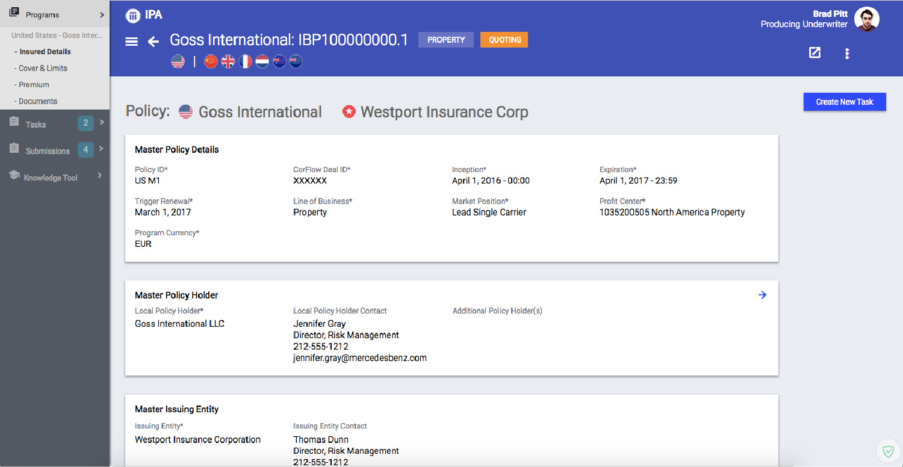
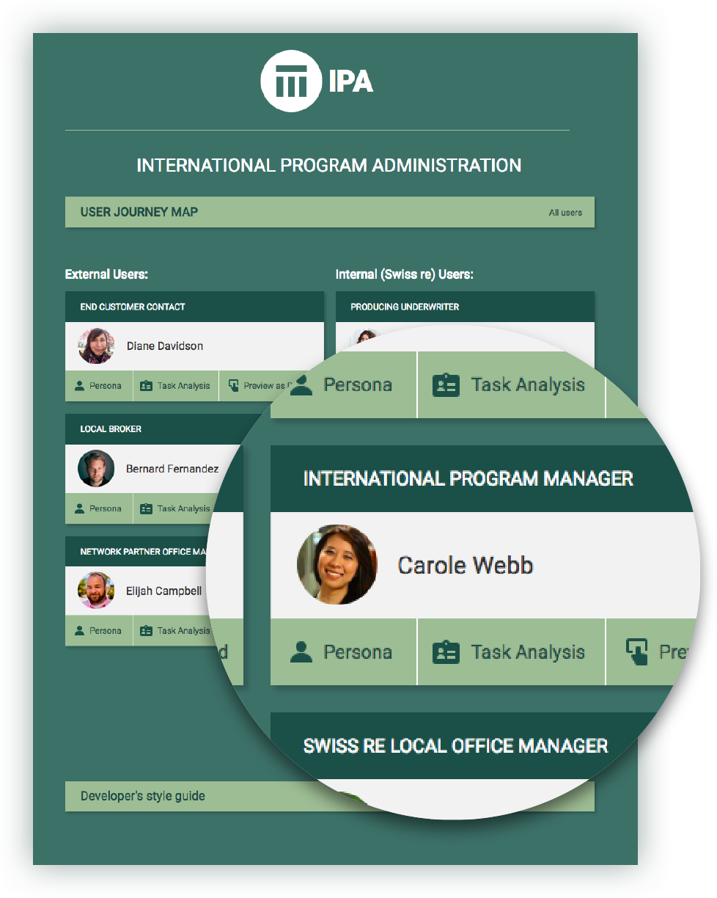
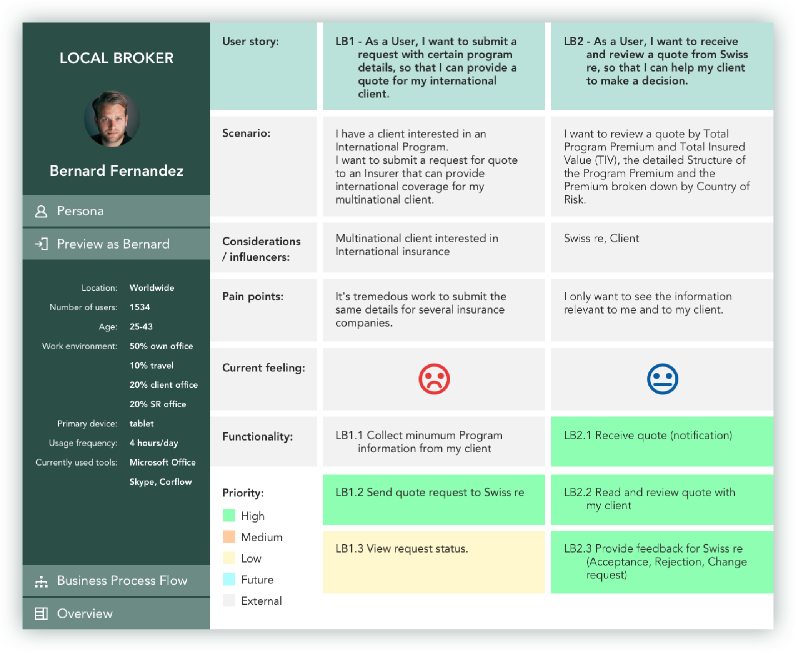
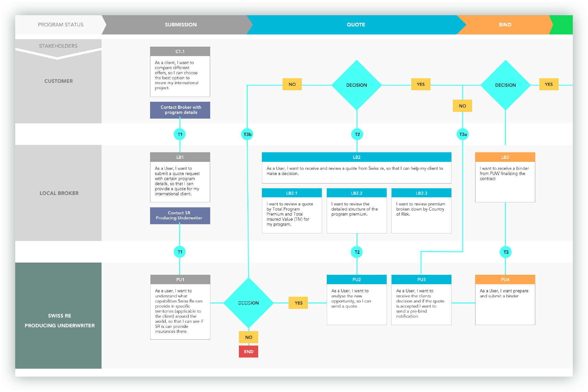
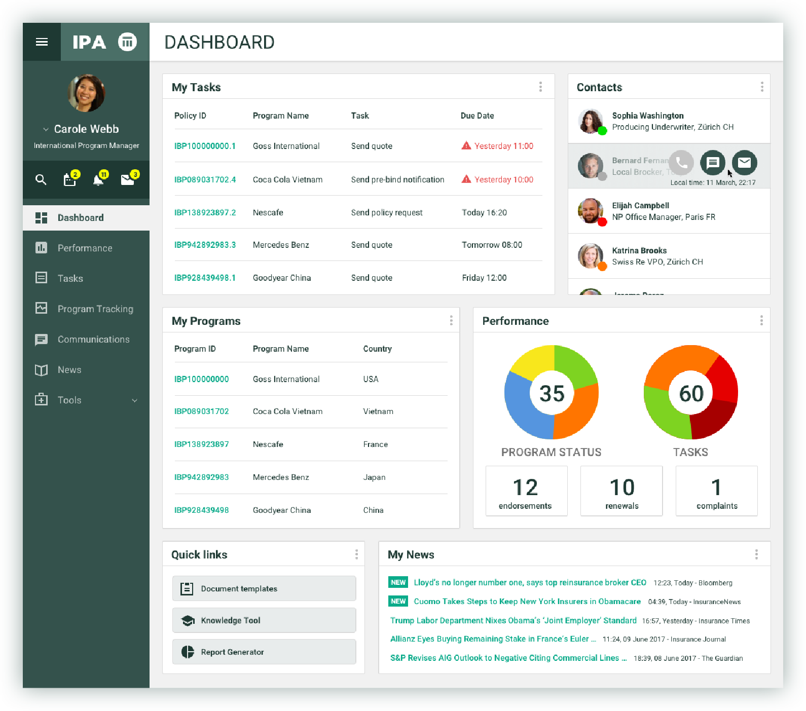

Project:
International Program Administration Application
Project overview
Design thinking approach: rapid prototyping with Axure RP to visualize and capture requirements. Daily review meetings with business stakeholders to discuss progress.
Front-end was built with an Angular JS library already used on another application to keep visual consistency across internal application.
Challenges
- development restrictions prevented user friendly experience
- difficult to satisfy complex business requirements coming from stakeholders with existing front-end framework, but not enough time and resources to enhance it
- changing scope and fundamental requirements during development
- lack of proper documentation, unmanaged client expectations

Project Reset

- start a human centered design process, involve more people
- organize workshops with different stakeholder groups to have a better view of their needs
- analyse user research data and come up with new solutions
- User research
- Personas
- User task analysis
- Business Process Flow
- Requirements captured in user stories
- Prioritized requirements
- Wireframing
- Prototyping with Axure
- Testing and validation with users

User research and task analysis,
user tasks captured with user stories

User research and task analysis,
user tasks captured with user stories
